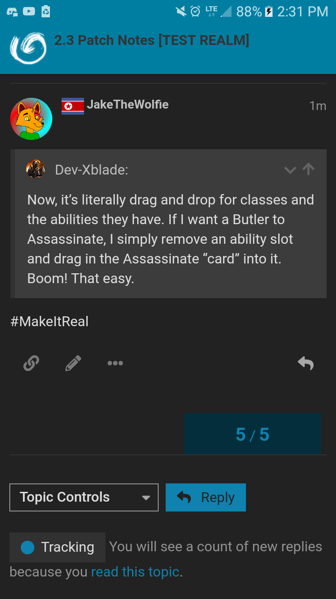

So, the current controversial topic: Should Mystics do the meta?
And a side question: Should Mystics have the choice without much consequence to do or not do the Mystic Meta?
Mystics should be allowed to do the meta,
Even if the meta isn’t fun, it’s still the smart move.
And if it’s EK, it backfires.
It should be entirely up to the players, but they should not feel obliged to do it.
It’s the quickest and most reliable way to solve the game for BD, but regardless of whether you find it an enjoyable way to play ToL, it shouldn’t ever become a requirement as a mystic or be considered gamethrowing if you choose not to participate in it as a BD. The only thing that can come from a decision like that is a smaller playerbase.
I definitely think mystic meta is bad. It places all decision making and deduction on a single player, while everyone else just does exactly what they’re told or gets executed for being unconfirmed.
It’d probably be better to just remove private matter from the game, but this sort of meta will always exist in some form as long as information can be communicated secretly. I’m not sure there’s any clean way to get rid of it without removing whispers completely, despite them having far more interesting uses other than sending all logs to a single player.
3 Likes
Pls do this.
1 Like
How so?
Because information is useless to EK, but good for GK.
and?
Since when is information useless for EK 
1 Like
Mystic Meta is good as long as you have a good Mystic player.
You shouldn’t be forced to do it, because you basically take the result of the game in your hands, so one wrong step and it might result in a BD loss because of it.
On the other hand, BD shouldn’t be so trusting of d2 Mystics, unless they do 75658 meta :^)
Yes, I understand, the chance of a n1 Illusionist is slim, but it still exists, and it will ruin you.
1 Like
Xblade agrees

1 Like
I have a feeling WKM will be back, but that’s far riskier at least. It’s a step in a good direction.
1 Like
DEAD.
MYSTIC META IS DEAD.
Yassssss
Completely totally fully dead